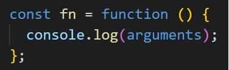
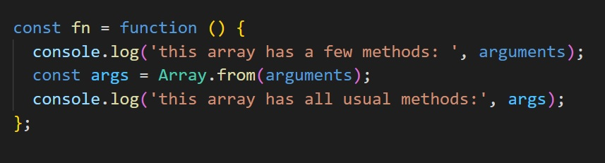
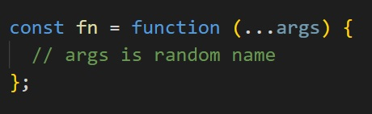

Module 2 - Arrays & functions/arrow functions
Lesson 3
Theory:
JavaScript has the primitive types: number, string, boolean, null, undefined, symbol and bigint
and a complex type: object
- console.log(5 === 5); // true, b/c it is "primitive type" of data and values are equal
- console.log([1,2,3] === [1,2,3]); // false, b/c it "a complex type", so there are different arrays, it is different place in memory.
Access to array index and changing element of array we use
If we need only to iterate array enough for (of){} construction
f.e.
Example with "continue" technique in looking for necessary values and optimize of continue unnecessary steps
Destructive vs Non-Destructive Approach in JavaScript Arrays Task for check some methods: make from title up slug like "destructive-vs-non"
String methods
-
split - transform string to the array
const name = "Mango";console.log(name.split("")); // ["M", "a", "n", "g", "o"]
Ex. 1.const message = "JavaScript это интересно";console.log(message.split(" ")); // ["JavaScript", "это", "интересно"]
Ex. 2.const message = 'Bearer gkdjfgldjlfgkjdlgfjdlgjdlg';console.log(message.split(' ')); // ["Bearer", "gkdjfgldjlfgkjdlgfjdlgjdlg"]// Sometime we have to use some element of array:console.log(message.split(' ')[1]); // gkdjfgldjlfgkjdlgfjdlgjdlg// or name any element that we need to useconst [word, token] = message.split(' ');console.log(token); // gkdjfgldjlfgkjdlgfjdlgjdlgconst [, token123] = message.split(' ');console.log(token123); // gkdjfgldjlfgkjdlgfjdlgjdlg
-
const blackListedWord1 = 'spam';const string1 = 'This is Prince Abdul, it is not spam!';string1.toLowerCase().includes(blackListedWord1); // true
Array methods
-
join
const words = ["JavaScript", "это", "интересно"];console.log(words.join("-")); // "JavaScript-это-интересно"
-
const clients = ["Mango", "Ajax", "Poly", "Kiwi"];console.log(clients.includes("Poly")); // true
-
const newArray = array1.concat(array2) or array1.concat(array2,array3,array4)
-
Spread operation ... one more methods to concatenate arrays is NOT-Destructive methodconst newArray = [1, 2, ...[3,4,5]]; // [1, 2, 3, 4, 5]or const newArray = [...[3,4,5], 11, 15]; // [3, 4, 5, 11, 15]or const numbers = [...[1, 2, 3], 100, ...[4, 5, 6], 200, ...[7, 8, 9]]; // [1, 2, 3, 100, 4, 5, 6, 200, 7, 8, 9]
Spread operation could use not only for arrays, also for spreading elements in function
F.e.const array = [5, 3, 17, 1]console.log(Math.max(...array));
-
const numbers = [];numbers.push(1);console.log(numbers); // [1]numbers.push(2);console.log(numbers); // [1, 2]
-
const numbers = [1, 2, 3, 4, 5];console.log(numbers.pop()); // 5console.log(numbers); // [1, 2, 3, 4]console.log(numbers.pop()); // 4console.log(numbers); // [1, 2, 3]
-
slice (not destructive method, creates new array)
slice(begin, end) возвращает новый массив, содержащий копию части исходного массива, не изменяя его. Копия делается от begin и до, но не включая, end - индексы элементов исходного массива.
-
A - copy from start to endconst clients = ["Mango", "Ajax", "Poly", "Kiwi"];console.log(clients.slice(1, 3)); // ["Ajax", "Poly"]
-
B - copy all array elementsЕсли begin и end не указаны, будет создана полная копия исходного массива.const clients = ["Mango", "Ajax", "Poly", "Kiwi"];console.log(clients.slice()); // ["Mango", Ajax", "Poly", "Kiwi"]
-
C - from start index till the endЕсли не указан end, копирование будет от start и до конца исходного массива.const clients = ["Mango", "Ajax", "Poly", "Kiwi"];console.log(clients.slice(1)); // ["Ajax", "Poly", "Kiwi"]console.log(clients.slice(2)); // ["Poly", "Kiwi"]
-
D - copy last elements
const clients = ["Mango", "Ajax", "Poly", "Kiwi"];console.log(clients.slice(-2)); // ["Poly", "Kiwi"]
-
-
splice
(destructive method - means, it change current array and also
return array of deleted elements)
- array(fromIndex, countToDelete) - delete necessary elements- array(fromIndex, 0, element1, element2, ....) - add element/elements from any index, NOT delete (identify zero)- array(indexAny, 1, element1)- replace element with any index (identify 1 means delete element with index "indexAny")
Швейцарский нож для работы с массивами, если исходный массив нужно изменить. Удаляет, добавляет и заменяет элементы в произвольном месте массива.
- indexOf, f.e. const index = ["card-1", "card-2", "card-3", "card-4"].indexOf(card-3);
Task 1. Delete "card-2" from array ["card-1", "card-2", "card-3", "card-4"]
Task 2. Replace "card-2" to "card-123" in array ["card-1", "card-2", "card-3", "card-4"]
Lesson 4
Модуль 2. Занятие 4. Функции Консоль браузера. Отлов ошибок при вызове. Стек-трейс.
-
const add = function ( parameters ) {
}console.log(a);console.log(b);
add( arguments )
-
If we don't know amount of parameters that we are waiting in
function, we could get them in available parameter called
arguments, this parameter is
in usual function and this
arguments don't have any usual array methods

So, for getting usual array we may use one of the following
methods:
- OLD METHOD: we use copy of array created with Array class, like Array.from(arguments) 
- Use rest operation for getting all arguments with all array methods 
Tasks to check yourself:
Make a function:
-
calculateTotalPrice of [5, 15,
25]
"for of" is suitable
-
Make logItems
["green", "yellow", "red"]
// green// yellow// red
-
findLogin in ['admin', 'john',
'master', 'admin123']
go from "for of" to "ternary"// User with ${login} was found// User with ${login} wasn't found
- findSmallestNumber of [51, 28, -3, 5, 14]
- changeCase of 'jAVAsCRIPT'
- make slugify of "Top 10 benefits of React Framework"
-
Make a function
totalSalary with using first
argument & making total from others: (Boyd, 10, 50, 40)
use case function (employer, ...salary)// User ${firstArgument} has salary ${totalOfNextArguments}
-
filterNumbers of ([5, 10, 20],
2, 5, 15, 30, 7, 20), means what elements from first
argument/array are in next arguments
// [5, 20]
Arrow functions
Модуль 4. Занятие 7. Callback-функции и замыкания (11.08) - from 01:47:00 till the end-
Arrow functions don't have all parameters in one variable "arguments", but all parameters may gain by rest (...) operation
const arrowFn = ( ...args ) => {console.log('=> args', args);}; -
We can't return in arrow functions object in {}
More info in https://medium.com/@gracet37/arrow-function-return-rules-4bab63961b92
const info = () => {a: 25};console.log(info()); // undefinedThere are two options to do it:
-
const add = (a, b) => {return {};a: 25,};
-
Better one is:
const add = (a, b) => ( { a: 25 } );
-